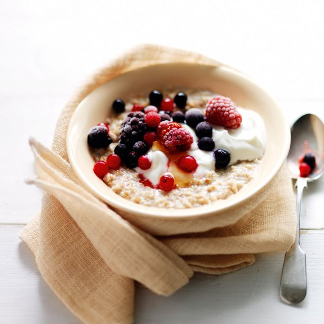

Porridge

This is a recipe for tasty classic porride
The recipe contains basic ingredients to create a yummy porridge. Porridge is great for breakfast, but can be eaten at any time. Enjoy!
Ingredients
- Oatmeal
- Blueberry
- Honey
- Milk (Soy or Oat)
- Nuts (optional)
Steps
- Put the oatmeal, blueberries, and milk into into a pot
- Heat the pot with the ingredients. But don't boil it
- After heating, put in some honey
- If you have them, also put in some nuts
Home